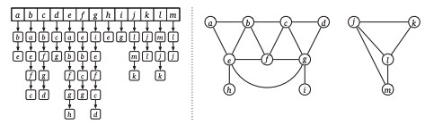

Coding Challenges
Contents
Coding Challenges#
Number of solved problems#
!grep -o '%load' all_algos.ipynb | wc -l
32
Python#
Arrays#
Two sum#
# %load ./pycharm/arrays/two_sum.py
import numpy as np
"""
Given an array of integers, return indices of the two numbers
such that they add up to a specific target.
You may assume that each input would have exactly one solution,
and you may not use the same element twice.
Example:
Given nums = [2, 7, 11, 15], target = 9,
Because nums[0] + nums[1] = 2 + 7 = 9,
return (0, 1)
"""
def sumMethod(array, target):
dic = {}
for index, value in enumerate(array):
if value in dic:
return (dic[value], index)
else:
dic[target - value] = index
return None
array = np.array([2, 7, 11, 9])
target = 11
print(sumMethod(array, target))
target = 10
print(sumMethod(array, target))
(0, 3)
None
Three sum#
# %load ./pycharm/arrays/three_sum.py
from itertools import combinations
"""
Given an array S of n integers, are there three distinct elements
a, b, c in S such that a + b + c = 0?
Find all unique triplets in the array which gives the sum of zero.
Note: The solution set must not contain duplicate triplets.
For example, given array S = [-1, 0, 1, 2, -1, -4],
A solution set is:
{
(-1, 0, 1),
(-1, -1, 2)
}
"""
def three_sum(array):
# combs = set([tuple(sorted(t)) for t in combinations(array, 3)])
# result = {item for item in combs if sum(item) == 0}
result = set([tuple(sorted(t)) for t in combinations(array, 3) if sum(t) == 0])
return result
array = [-1, 0, 1, 2, -1, -4]
print(three_sum(array))
{(-1, 0, 1), (-1, -1, 2)}
Longest substring without repeating characters#
# %load ./pycharm/arrays/longest_substring_wo_repeat.py
"""
Given a string, find the length of the longest substring
without repeating characters.
Examples:
Given "abcabcbb", the answer is "abc", which the length is 3.
Given "bbbbb", the answer is "b", with the length of 1.
Given "pwwkew", the answer is "wke", with the length of 3.
Note that the answer must be a substring,
"pwke" is a subsequence and not a substring.
"""
def mainFun(string):
str_arr = list(string)
str_len = len(str_arr)
outer_dict = dict()
inner_dict = {}
for i in range(1, str_len+1):
for j in range(0, str_len-i+1):
sub_str = str_arr[j:j+i]
tup = tuple(sorted(set(sub_str)))
if tup in inner_dict.values():
# print(f"Duplicate={''.join(sub_str)}: {tup}")
break
else:
str2 = ''.join(sub_str)
inner_dict[str2] = tup
print(inner_dict)
max_length = 0
element = None
for k,v in inner_dict.items():
if len(v) >= max_length:
max_length = len(v)
element = k
print(''.join(element))
string = "abcabcbb"
mainFun(string)
string = "bbbbb"
mainFun(string)
string = "pwwkew"
mainFun(string) # Not working right
string = "abcdefg"
mainFun(string)
{'a': ('a',), 'b': ('b',), 'c': ('c',), 'ab': ('a', 'b'), 'bc': ('b', 'c'), 'ca': ('a', 'c'), 'abc': ('a', 'b', 'c')}
abc
{'b': ('b',)}
b
{'p': ('p',), 'w': ('w',), 'pw': ('p', 'w'), 'pwwk': ('k', 'p', 'w'), 'wwke': ('e', 'k', 'w'), 'pwwke': ('e', 'k', 'p', 'w')}
pwwke
{'a': ('a',), 'b': ('b',), 'c': ('c',), 'd': ('d',), 'e': ('e',), 'f': ('f',), 'g': ('g',), 'ab': ('a', 'b'), 'bc': ('b', 'c'), 'cd': ('c', 'd'), 'de': ('d', 'e'), 'ef': ('e', 'f'), 'fg': ('f', 'g'), 'abc': ('a', 'b', 'c'), 'bcd': ('b', 'c', 'd'), 'cde': ('c', 'd', 'e'), 'def': ('d', 'e', 'f'), 'efg': ('e', 'f', 'g'), 'abcd': ('a', 'b', 'c', 'd'), 'bcde': ('b', 'c', 'd', 'e'), 'cdef': ('c', 'd', 'e', 'f'), 'defg': ('d', 'e', 'f', 'g'), 'abcde': ('a', 'b', 'c', 'd', 'e'), 'bcdef': ('b', 'c', 'd', 'e', 'f'), 'cdefg': ('c', 'd', 'e', 'f', 'g'), 'abcdef': ('a', 'b', 'c', 'd', 'e', 'f'), 'bcdefg': ('b', 'c', 'd', 'e', 'f', 'g'), 'abcdefg': ('a', 'b', 'c', 'd', 'e', 'f', 'g')}
abcdefg
Median of Two Sorted Arrays#
# %load ./pycharm/arrays/median_sorted_array.py
class Solution(object):
'''
Given two sorted arrays nums1 and nums2 of size m and n respectively, return the median of the two sorted arrays.
The overall run time complexity should be O(log (m+n)).
Example 1:
Input: nums1 = [1,3], nums2 = [2]
Output: 2.00000
Explanation: merged array = [1,2,3] and median is 2.
Example 2:
Input: nums1 = [1,2], nums2 = [3,4]
Output: 2.50000
Explanation: merged array = [1,2,3,4] and median is (2 + 3) / 2 = 2.5.
Constraints:
nums1.length == m
nums2.length == n
0 <= m <= 1000
0 <= n <= 1000
1 <= m + n <= 2000
-106 <= nums1[i], nums2[i] <= 106
'''
def findMedianSortedArrays(self, nums1, nums2):
"""
:type nums1: List[int]
:type nums2: List[int]
:rtype: float
"""
l1 = len(nums1)
l2 = len(nums2)
i1, i2 = 0, 0
snums = []
while (i1 < l1) and (i2 < l2):
if nums1[i1] < nums2[i2]:
snums.append(nums1[i1])
i1 += 1
else:
snums.append(nums2[i2])
i2 += 1
if i1 < l1:
snums.extend(nums1[i1:])
if i2 < l2:
snums.extend(nums2[i2:])
median = None
if snums:
mid = int(len(snums) / 2)
if len(snums) % 2:
median = snums[mid] # Odd
else:
median = (snums[mid] + snums[mid-1])/2 # Even
return median
s = Solution()
nums1 = [1,2]
nums2 = [3,4]
print(s.findMedianSortedArrays(nums1, nums2))
2.5
Container with most water#
# %load ./pycharm/arrays/container_with_most_water.py
class Solution(object):
'''
You are given an integer array height of length n. There are n vertical lines drawn such that the two endpoints
of the ith line are (i, 0) and (i, height[i]).
Find two lines that together with the x-axis form a container, such that the container contains the most water.
Return the maximum amount of water a container can store.
Notice that you may not slant the container.
Example 1:
Input: height = [1,8,6,2,5,4,8,3,7]
Output: 49
Explanation: The above vertical lines are represented by array [1,8,6,2,5,4,8,3,7]. In this case, the max area of
water (blue section) the container can contain is 49.
Example 2:
Input: height = [1,1]
Output: 1
'''
def maxArea(self, height):
"""
:type height: List[int]
:rtype: int
"""
l = 0
r = len(height)-1
xArea = 0
while l < r:
xArea = max(xArea, min(height[l], height[r]) * (r - l))
if (height[l] < height[r]):
l += 1
else:
r -= 1
return xArea
s = Solution()
height = [1,8,6,2,5,4,8,3,7]
print(s.maxArea(height))
49
Three sum closet#
# %load ./pycharm/arrays/three_sum_closet.py
from itertools import combinations
class Solution(object):
'''
Given an integer array nums of length n and an integer target, find three integers in nums such that the
sum is closest to target.
Return the sum of the three integers.
You may assume that each input would have exactly one solution.
Example 1:
Input: nums = [-1,2,1,-4], target = 1
Output: 2
Explanation: The sum that is closest to the target is 2. (-1 + 2 + 1 = 2).
Example 2:
Input: nums = [0,0,0], target = 1
Output: 0
Constraints:
3 <= nums.length <= 1000
-1000 <= nums[i] <= 1000
-10^4 <= target <= 10^4
'''
def threeSumClosest(self, nums, target):
"""
:type nums: List[int]
:type target: int
:rtype: int
"""
# combs = [elements for elements in combinations(nums, 3)]
# difference = [abs(target - sum(elements)) for elements in combs]
# print(combs, difference)
# return sum(combs[difference.index(min(difference))])
overall_sum = float('inf')
nums.sort()
for i in range(len(nums)):
l, h = i+1, len(nums)-1
while(l < h):
local_sum = nums[i] + nums[l] + nums[h]
if abs(target - local_sum) < abs(overall_sum):
overall_sum = target - local_sum
if local_sum < target:
l += 1
else:
h -= 1
if overall_sum == 0:
break
return target - overall_sum
s = Solution()
# nums = [-86,8,0,-79,-23,88,-26,-17,41,70,1,29,3,-52,-30,-31,14,42,4,-52,-77,-39,91,-13,98,41,-16,-8,91,54,50,1,-22,45,30,20,-36,-41,-48,-25,-3,76,69,-38,78,-45,-75,-57,55,-23,65,-23,69,60,85,-95,84,-73,-21,43,35,58,66,6,-49,38,-5,46,-24,23,-23,63,55,-91,80,-73,-53,24,-77,-5,-93,4,2,-71,23,2,-44,-19,33,73,9,-94,41,81,-14,43,27,3,-65,-89,0,-100,-89,-76,95,0,-60,65,-77,85,-29,98,-8,18,41,-93,-64,51,-77,-39,-75,-6,-65,0,-15,66,80,67,-96,26,-57,-43,-76,72,20,-55,-83,95,-65,22,-47,-90,-83,13,6,81,-23,-50,-17,17,100,99,66,-62,-21,76,37,60,-88,64,78,-90,67,-65,-62,55,-87,-75,-79,14,87,-100,-87,9,-98,0,-83,7,29,33,-87,-50,6,-57,28,17,26,4]
# target = 136
nums = [1,1,1,0]
target = -100
# nums = [-1,2,1,-4]
# target = 1
print(s.threeSumClosest(nums, target))
2
Next Permutation#

# %load ./pycharm/arrays/next_permutation.py
class Solution(object):
'''
A permutation of an array of integers is an arrangement of its members into a sequence or linear order.
For example, for arr = [1,2,3], the following are considered permutations of arr: [1,2,3], [1,3,2], [3,1,2],
[2,3,1].
The next permutation of an array of integers is the next lexicographically greater permutation of its integer.
More formally, if all the permutations of the array are sorted in one container according to their
lexicographical order, then the next permutation of that array is the permutation that follows it in the
sorted container. If such arrangement is not possible, the array must be rearranged as the lowest possible
order (i.e., sorted in ascending order).
For example, the next permutation of arr = [1,2,3] is [1,3,2].
Similarly, the next permutation of arr = [2,3,1] is [3,1,2].
While the next permutation of arr = [3,2,1] is [1,2,3] because [3,2,1] does not have a lexicographical larger
rearrangement.
Given an array of integers nums, find the next permutation of nums.
The replacement must be in place and use only constant extra memory.
Example 1:
Input: nums = [1,2,3]
Output: [1,3,2]
Example 2:
Input: nums = [3,2,1]
Output: [1,2,3]
Example 3:
Input: nums = [1,1,5]
Output: [1,5,1]
Constraints:
1 <= nums.length <= 100
0 <= nums[i] <= 100
'''
def nextPermutation(self, nums):
"""
:type nums: List[int]
:rtype: None Do not return anything, modify nums in-place instead.
"""
# 1 2 3 -> 1 3 2
# 3 2 1 -> 1 2 3
# 1 1 5 -> 1 5 1
# 1 3 5 4 3 2 1 -> 1 4 1 2 3 3 5
n = len(nums)
pivot = 0
# find pivot "position"- loop from back to front, to check if previous element is smaller than next
for i in range(n-1, 0, -1):
if nums[i-1] < nums[i]:
pivot = i
break
# if array is in descending order, sort them, and return
if pivot == 0:
nums.sort()
return
# find pivot "element" among element from pivot to the end(next lexicographical element)
swap = n - 1
while(nums[pivot-1] >= nums[swap]):
swap -= 1
# swap "pivot element" with next "lexicographical element", and then sort all elements post pivot
nums[swap], nums[pivot-1] = nums[pivot-1], nums[swap]
nums[pivot:] = sorted(nums[pivot:])
return
s = Solution()
nums = [1,3,5,4,3,2,1]
# nums = [1,1,5]
s.nextPermutation(nums)
print(nums)
[1, 4, 1, 2, 3, 3, 5]
Graph#
Adjacency list#
useful in sparsely connected graphs
space complexity O(V+E)

# %load ./pycharm/graphs/adjacency_list.py
'''
Add two container - one vertex, another graph object
vertex - holds node and neighbors information
graph - holds adds all vertices, edge/connection information
'''
class Vertex:
def __init__(self, vertex):
self.vertex = vertex
self.neighbors = {}
def addNeighbor(self, vertex, edgeValue=None):
self.neighbors[vertex] = edgeValue
def getEdges(self):
return self.neighbors
def getVertex(self):
return self.vertex
def getEdgeValue(self):
return self.neighbors[self.vertex]
class Graph:
def __init__(self):
self.vertices = {}
def addVertex(self, v):
self.vertices[v.vertex] = v
def addVertices(self, vertexList):
for i in vertexList:
self.addVertex(Vertex(i))
def addEdge(self, fromToPair, edgeValue=None):
'''
fromToPair: a tuple pair with "from" vertex information
to "to" vertex information
'''
assert len(fromToPair) == 2
for i in fromToPair:
if i not in self.vertices:
self.addVertex(Vertex(i))
self.vertices[fromToPair[0]].addNeighbor(fromToPair[1], edgeValue)
def getVertices(self):
'''
This returns all the vertices keys of the graph object
:return: vertex keys
'''
return set(self.vertices.keys())
def getVertexNeighbors(self, v):
'''
This returns vertex neighbor information
:param v: vertex object
:return: dictionary of neighbor edges
'''
return self.vertices[v.vertex].getEdges()
def addGraph(self, dict):
'''
An easier way to add elements into graph object
The dict parameter holds dictionary of vertices and its dictionary of edge elements
:param dict: a two-level nested dictionary, outer holds the vertex, inner holds the edge information
:return: None
'''
for k,v in dict.items():
self.addVertex(Vertex(k))
for ek, ev in v.items():
self.addEdge((k, ek), ev)
def getPossiblePaths(self, fromVertex, toVertex):
explorePaths = set()
# loop over connection universe starting from fromVertex
# knocking off the visitedVertex and exploring paths
numberOfNodes = 2
root = fromVertex
neighborSet = self.getVertexNeighbors(root)
for k, v in neighborSet.items():
explorePaths.add(((root.vertex, k), (v,)))
tempExplorePaths = explorePaths
while(explorePaths and numberOfNodes < len(self.getVertices())):
explorePaths = set()
for item in tempExplorePaths:
l = self.getVertexNeighbors(Vertex(item[0][-1]))
for k, v in l.items():
nodes = list(item[0])
weights = list(item[1])
if k not in nodes:
nodes.append(k)
weights.append(v)
explorePaths.add(((tuple(nodes), tuple(weights))))
tempExplorePaths = explorePaths
numberOfNodes += 1
for item in explorePaths:
if item[0][-1] == toVertex.vertex:
print(f'Path={item[0]}, Weight={item[1]}, Sum={sum(item[1])}')
graph = Graph()
graphElements = {
'a': {'b': 5, 'c': 2},
'b': {'a': 5, 'c': 7, 'd': 8},
'c': {'a': 2, 'b': 7, 'd': 4, 'e': 8},
'd': {'b': 8, 'c': 4, 'e': 6, 'f': 4},
'e': {'c': 8, 'd': 6, 'f': 3},
'f': {'e': 3, 'd': 4}
}
graph.addGraph(graphElements)
# print(graph.getVertexNeighbors(Vertex('a')))
graph.getPossiblePaths(Vertex('a'), Vertex('f'))
Path=('a', 'b', 'c', 'd', 'e', 'f'), Weight=(5, 7, 4, 6, 3), Sum=25
Path=('a', 'b', 'c', 'e', 'd', 'f'), Weight=(5, 7, 8, 6, 4), Sum=30
Path=('a', 'b', 'd', 'c', 'e', 'f'), Weight=(5, 8, 4, 8, 3), Sum=28
Path=('a', 'c', 'b', 'd', 'e', 'f'), Weight=(2, 7, 8, 6, 3), Sum=26
Disjoint sets - Quick find#
find and union are the important pieces of its implementation
find method finds the root node of vertex. Time complexity O(1)
union method combines and makes a common root node. Time complexity O(N)
# %load ./pycharm/graphs/disjoint_set_01_quick_find.py
class DisjointSet(object):
'''
This implementation is of disjoint set - quick find
Hint: Instead of storing parent node in the array, store the root node
Then we won't need iteration from the leaf node to the parent root node
'''
def __init__(self, size):
self.rootArr = [i for i in range(size)]
print(f'Arr{self.rootArr}')
def find(self, index):
'''
Time complexity O(1)
Return the element of the corresponding index
:param index: index of the array
:return: element
'''
return self.rootArr[index]
def union(self, nodeOne, nodeTwo):
'''
Time complexity O(n)
If the elements have a common root, no action is taken.
If the elements have different root, the root of node one is assigned to root of node two.
:param nodeOne: the first element
:param nodeTwo: the second element
:return: None
'''
rootOne = self.find(nodeOne)
rootTwo = self.find(nodeTwo)
print(rootOne, rootTwo)
if (rootOne != rootTwo):
for i in range(len(self.rootArr)):
if self.rootArr[i] == rootTwo:
self.rootArr[i] = rootOne
print(f'N1:{nodeOne}, N2:{nodeTwo}, Arr:{self.rootArr}')
def isConnected(self, nodeOne, nodeTwo):
'''
Time complexity O(1)
Validates if the root node of element one and element two are same
:param nodeOne: node one
:param nodeTwo: node two
:return: true if root nodes are the same, false otherwise
'''
return self.find(nodeOne) == self.find(nodeTwo)
ds = DisjointSet(8)
ds.union(0,1)
ds.union(0,3)
ds.union(1,2)
ds.union(4,5)
ds.union(6,7)
# ds = DisjointSet(10)
# ds.union(1, 2)
# ds.union(2, 5)
# ds.union(5, 6)
# ds.union(6, 7)
# ds.union(3, 8)
# ds.union(8, 9)
print(ds.isConnected(2,3))
print(ds.isConnected(2,3))
print(ds.isConnected(2,6))
# print(ds.isConnected(1, 5))
# print(ds.isConnected(5, 7))
# print(ds.isConnected(4, 9))
# ds.union(9, 4)
# print(ds.isConnected(4, 9))
#
Arr[0, 1, 2, 3, 4, 5, 6, 7]
0 1
N1:0, N2:1, Arr:[0, 0, 2, 3, 4, 5, 6, 7]
0 3
N1:0, N2:3, Arr:[0, 0, 2, 0, 4, 5, 6, 7]
0 2
N1:1, N2:2, Arr:[0, 0, 0, 0, 4, 5, 6, 7]
4 5
N1:4, N2:5, Arr:[0, 0, 0, 0, 4, 4, 6, 7]
6 7
N1:6, N2:7, Arr:[0, 0, 0, 0, 4, 4, 6, 6]
True
True
False
Disjoint sets - Quick union#
# %load ./pycharm/graphs/disjoint_set_02_quick_union.py
class DisjointSet(object):
'''
This implementation is of disjoint set - quick union
As the worst case complexity of find and union each is O(n), generally it will perform better than n * O(n) <= O(n^2)
So the quick union is more efficient than quick find method whose time complexity is n * O(n) = O(n^2)
Hint: Instead of storing parent node in the array, store the root node
Then we won't need iteration from the leaf node to the parent root node
'''
def __init__(self, size):
self.rootArr = [i for i in range(size)]
print(f'Arr{self.rootArr}')
def find(self, index):
'''
Time complexity O(n) is the worst case scenario
Return the element of the corresponding index
:param index: index of the array
:return: element
'''
while index != self.rootArr[index]:
index = self.rootArr[index]
return index
def union(self, nodeOne, nodeTwo):
'''
Time complexity O(n) is the worst case scenario
If the elements have a common root, no action is taken.
If the elements have different root, the root of node one is assigned to root of node two.
:param nodeOne: the first element
:param nodeTwo: the second element
:return: None
'''
rootOne = self.find(nodeOne)
rootTwo = self.find(nodeTwo)
print(rootOne, rootTwo)
if (rootOne != rootTwo):
self.rootArr[rootTwo] = rootOne
print(f'N1:{nodeOne}, N2:{nodeTwo}, Arr:{self.rootArr}')
def isConnected(self, nodeOne, nodeTwo):
'''
Time complexity O(n)
Validates if the root node of element one and element two are same
:param nodeOne: node one
:param nodeTwo: node two
:return: true if root nodes are the same, false otherwise
'''
return self.find(nodeOne) == self.find(nodeTwo)
ds = DisjointSet(8)
ds.union(0,1)
ds.union(0,3)
ds.union(1,2)
ds.union(4,5)
ds.union(6,7)
# ds = DisjointSet(10)
# ds.union(1, 2)
# ds.union(2, 5)
# ds.union(5, 6)
# ds.union(6, 7)
# ds.union(3, 8)
# ds.union(8, 9)
print(ds.isConnected(2,3))
print(ds.isConnected(2,3))
print(ds.isConnected(2,6))
# print(ds.isConnected(1, 5))
# print(ds.isConnected(5, 7))
# print(ds.isConnected(4, 9))
# ds.union(9, 4)
# print(ds.isConnected(4, 9))
#
Arr[0, 1, 2, 3, 4, 5, 6, 7]
0 1
N1:0, N2:1, Arr:[0, 0, 2, 3, 4, 5, 6, 7]
0 3
N1:0, N2:3, Arr:[0, 0, 2, 0, 4, 5, 6, 7]
0 2
N1:1, N2:2, Arr:[0, 0, 0, 0, 4, 5, 6, 7]
4 5
N1:4, N2:5, Arr:[0, 0, 0, 0, 4, 4, 6, 7]
6 7
N1:6, N2:7, Arr:[0, 0, 0, 0, 4, 4, 6, 6]
True
True
False
Disjoint sets - Union by rank#
# %load ./pycharm/graphs/disjoint_set_03_union_by_rank.py
class DisjointSet(object):
'''
This implementation is of disjoint set - quick union
Additionally maintain the rank/height of each vertex from the root
As the worst case complexity of find and union each is O(n), generally it will perform better than n * O(n) <= O(n^2)
So the quick union is more efficient than quick find method whose time complexity is n * O(n) = O(n^2)
Hint: Instead of storing parent node in the array, store the root node
Then we won't need iteration from the leaf node to the parent root node
'''
def __init__(self, size):
self.rootArr = [i for i in range(size)]
self.rankArr = [1]*size
print(f'Arr{self.rootArr}')
print(f'Height{self.rankArr}')
def find(self, index):
'''
Time complexity O(n) is the worst case scenario
Return the element of the corresponding index
:param index: index of the array
:return: element
'''
while index != self.rootArr[index]:
index = self.rootArr[index]
return index
def union(self, nodeOne, nodeTwo):
'''
Time complexity O(n) is the worst case scenario
If the elements have a common root, no action is taken.
If the elements have different root, the root of node one is assigned to root of node two.
:param nodeOne: the first element
:param nodeTwo: the second element
:return: None
'''
rootOne = self.find(nodeOne)
rootTwo = self.find(nodeTwo)
print(rootOne, rootTwo)
if (rootOne != rootTwo):
if (self.rankArr[rootOne] > self.rankArr[rootTwo]):
self.rootArr[rootTwo] = rootOne
self.rankArr[rootTwo] = self.rankArr[rootOne] + 1
elif (self.rankArr[rootOne] < self.rankArr[rootTwo]):
self.rootArr[rootOne] = rootTwo
self.rankArr[rootOne] = self.rankArr[rootTwo] + 1
else:
self.rootArr[rootTwo] = rootOne
self.rankArr[rootOne] += 1
print(f'N1:{nodeOne}, N2:{nodeTwo}, Arr:{self.rootArr}, Height:{self.rankArr}')
def isConnected(self, nodeOne, nodeTwo):
'''
Time complexity O(n)
Validates if the root node of element one and element two are same
:param nodeOne: node one
:param nodeTwo: node two
:return: true if root nodes are the same, false otherwise
'''
val = self.find(nodeOne) == self.find(nodeTwo)
print(f'N1:{nodeOne}, N2:{nodeTwo}, IsConnected:{val}')
return val
# ds = DisjointSet(8)
# ds.union(0,1)
# ds.union(0,3)
# ds.union(1,2)
# ds.union(4,5)
# ds.union(6,7)
ds = DisjointSet(10)
ds.union(1, 2)
ds.union(2, 5)
ds.union(5, 6)
ds.union(6, 7)
ds.union(3, 8)
ds.union(8, 9)
# ds.isConnected(2,3)
# ds.isConnected(2,3)
# ds.isConnected(2,6)
ds.isConnected(1, 5)
ds.isConnected(5, 7)
ds.isConnected(4, 9)
ds.union(9, 4)
ds.isConnected(4, 9)
#
Arr[0, 1, 2, 3, 4, 5, 6, 7, 8, 9]
Height[1, 1, 1, 1, 1, 1, 1, 1, 1, 1]
1 2
N1:1, N2:2, Arr:[0, 1, 1, 3, 4, 5, 6, 7, 8, 9], Height:[1, 2, 1, 1, 1, 1, 1, 1, 1, 1]
1 5
N1:2, N2:5, Arr:[0, 1, 1, 3, 4, 1, 6, 7, 8, 9], Height:[1, 2, 1, 1, 1, 3, 1, 1, 1, 1]
1 6
N1:5, N2:6, Arr:[0, 1, 1, 3, 4, 1, 1, 7, 8, 9], Height:[1, 2, 1, 1, 1, 3, 3, 1, 1, 1]
1 7
N1:6, N2:7, Arr:[0, 1, 1, 3, 4, 1, 1, 1, 8, 9], Height:[1, 2, 1, 1, 1, 3, 3, 3, 1, 1]
3 8
N1:3, N2:8, Arr:[0, 1, 1, 3, 4, 1, 1, 1, 3, 9], Height:[1, 2, 1, 2, 1, 3, 3, 3, 1, 1]
3 9
N1:8, N2:9, Arr:[0, 1, 1, 3, 4, 1, 1, 1, 3, 3], Height:[1, 2, 1, 2, 1, 3, 3, 3, 1, 3]
N1:1, N2:5, IsConnected:True
N1:5, N2:7, IsConnected:True
N1:4, N2:9, IsConnected:False
3 4
N1:9, N2:4, Arr:[0, 1, 1, 3, 3, 1, 1, 1, 3, 3], Height:[1, 2, 1, 2, 3, 3, 3, 3, 1, 3]
N1:4, N2:9, IsConnected:True
True
Disjoint Sets - Path Compression Optimization#
# %load ./pycharm/graphs/disjoint_set_04_path_compression.py
class DisjointSet(object):
'''
This implementation is of disjoint set is an optimization method called path compression for find() method
Here the leaf and child nodes are directly connected to the root vertex node
The path compression is implemented in find() method using recursion
'''
def __init__(self, size):
self.rootArr = [i for i in range(size)]
self.rankArr = [1]*size
print(f'Arr{self.rootArr}')
print(f'Height{self.rankArr}')
def find(self, index):
'''
Time complexity O(n) is the worst case scenario
Return the element of the corresponding index
:param index: index of the array
:return: element
'''
if index == self.rootArr[index]:
return index
self.rootArr[index] = self.find(self.rootArr[index])
return self.rootArr[index]
def union(self, nodeOne, nodeTwo):
'''
Time complexity O(n) is the worst case scenario
If the elements have a common root, no action is taken.
If the elements have different root, the root of node one is assigned to root of node two.
:param nodeOne: the first element
:param nodeTwo: the second element
:return: None
'''
rootOne = self.find(nodeOne)
rootTwo = self.find(nodeTwo)
print(rootOne, rootTwo)
if (rootOne != rootTwo):
if (self.rankArr[rootOne] > self.rankArr[rootTwo]):
self.rootArr[rootTwo] = rootOne
self.rankArr[rootTwo] = self.rankArr[rootOne] + 1
elif (self.rankArr[rootOne] < self.rankArr[rootTwo]):
self.rootArr[rootOne] = rootTwo
self.rankArr[rootOne] = self.rankArr[rootTwo] + 1
else:
self.rootArr[rootTwo] = rootOne
self.rankArr[rootOne] += 1
print(f'N1:{nodeOne}, N2:{nodeTwo}, Arr:{self.rootArr}, Height:{self.rankArr}')
def isConnected(self, nodeOne, nodeTwo):
'''
Time complexity O(n)
Validates if the root node of element one and element two are same
:param nodeOne: node one
:param nodeTwo: node two
:return: true if root nodes are the same, false otherwise
'''
val = self.find(nodeOne) == self.find(nodeTwo)
print(f'N1:{nodeOne}, N2:{nodeTwo}, IsConnected:{val}')
return val
# ds = DisjointSet(8)
# ds.union(0,1)
# ds.union(0,3)
# ds.union(1,2)
# ds.union(4,5)
# ds.union(6,7)
ds = DisjointSet(10)
ds.union(1, 2)
ds.union(2, 5)
ds.union(5, 6)
ds.union(6, 7)
ds.union(3, 8)
ds.union(8, 9)
# ds.isConnected(2,3)
# ds.isConnected(2,3)
# ds.isConnected(2,6)
ds.isConnected(1, 5)
ds.isConnected(5, 7)
ds.isConnected(4, 9)
ds.union(9, 4)
ds.isConnected(4, 9)
#
Arr[0, 1, 2, 3, 4, 5, 6, 7, 8, 9]
Height[1, 1, 1, 1, 1, 1, 1, 1, 1, 1]
1 2
N1:1, N2:2, Arr:[0, 1, 1, 3, 4, 5, 6, 7, 8, 9], Height:[1, 2, 1, 1, 1, 1, 1, 1, 1, 1]
1 5
N1:2, N2:5, Arr:[0, 1, 1, 3, 4, 1, 6, 7, 8, 9], Height:[1, 2, 1, 1, 1, 3, 1, 1, 1, 1]
1
6
N1:5, N2:6, Arr:[0, 1, 1, 3, 4, 1, 1, 7, 8, 9], Height:[1, 2, 1, 1, 1, 3, 3, 1, 1, 1]
1 7
N1:6, N2:7, Arr:[0, 1, 1, 3, 4, 1, 1, 1, 8, 9], Height:[1, 2, 1, 1, 1, 3, 3, 3, 1, 1]
3 8
N1:3, N2:8, Arr:[0, 1, 1, 3, 4, 1, 1, 1, 3, 9], Height:[1, 2, 1, 2, 1, 3, 3, 3, 1, 1]
3 9
N1:8, N2:9, Arr:[0, 1, 1, 3, 4, 1, 1, 1, 3, 3], Height:[1, 2, 1, 2, 1, 3, 3, 3, 1, 3]
N1:1, N2:5, IsConnected:True
N1:5, N2:7, IsConnected:True
N1:4, N2:9, IsConnected:False
3 4
N1:9, N2:4, Arr:[0, 1, 1, 3, 3, 1, 1, 1, 3, 3], Height:[1, 2, 1, 2, 3, 3, 3, 3, 1, 3]
N1:4, N2:9, IsConnected:True
True
# %load ./pycharm/graphs/disjoint_set_05P_no_of_province.py
class DisjointSet(object):
'''
This implementation is of disjoint set is an optimization method called path compression for find() method
Here the leaf and child nodes are directly connected to the root vertex node
The path compression is implemented in find() method using recursion
'''
def __init__(self, size):
self.rootArr = [i for i in range(size)]
self.rankArr = [1]*size
# Initially set to number of nodes, during union it is reduced by 1 as each edge means one less province
self.count = size
print(f'Arr{self.rootArr}')
print(f'Height{self.rankArr}')
def find(self, index):
'''
Time complexity O(n) is the worst case scenario
Return the element of the corresponding index
:param index: index of the array
:return: element
'''
if index == self.rootArr[index]:
return index
self.rootArr[index] = self.find(self.rootArr[index])
return self.rootArr[index]
def union(self, nodeOne, nodeTwo):
'''
Time complexity O(n) is the worst case scenario
If the elements have a common root, no action is taken.
If the elements have different root, the root of node one is assigned to root of node two.
:param nodeOne: the first element
:param nodeTwo: the second element
:return: None
'''
rootOne = self.find(nodeOne)
rootTwo = self.find(nodeTwo)
print(rootOne, rootTwo)
if (rootOne != rootTwo):
if (self.rankArr[rootOne] > self.rankArr[rootTwo]):
self.rootArr[rootTwo] = rootOne
self.rankArr[rootTwo] = self.rankArr[rootOne] + 1
elif (self.rankArr[rootOne] < self.rankArr[rootTwo]):
self.rootArr[rootOne] = rootTwo
self.rankArr[rootOne] = self.rankArr[rootTwo] + 1
else:
self.rootArr[rootTwo] = rootOne
self.rankArr[rootOne] += 1
self.count -= 1
print(f'N1:{nodeOne}, N2:{nodeTwo}, Arr:{self.rootArr}, Height:{self.rankArr}')
def isConnected(self, nodeOne, nodeTwo):
'''
Time complexity O(n)
Validates if the root node of element one and element two are same
:param nodeOne: node one
:param nodeTwo: node two
:return: true if root nodes are the same, false otherwise
'''
val = self.find(nodeOne) == self.find(nodeTwo)
print(f'N1:{nodeOne}, N2:{nodeTwo}, IsConnected:{val}')
return val
def getCount(self):
'''
Returns the number of provinces
:return: count
'''
return self.count
class NoOfProvince(object):
'''
TODO
There are n cities. Some of them are connected, while some are not. If city a is connected directly
with city b, and city b is connected directly with city c, then city a is connected indirectly with city c.
A province is a group of directly or indirectly connected cities and no other cities outside of the group.
You are given an n x n matrix isConnected where isConnected[i][j] = 1 if the ith city and the jth city are
directly connected, and isConnected[i][j] = 0 otherwise.
Return the total number of provinces.
Input: isConnected = [[1,1,0],[1,1,0],[0,0,1]]
Output: 2
Input: isConnected = [[1,0,0],[0,1,0],[0,0,1]]
Output: 3
Constraints:
1 <= n <= 200
n == isConnected.length
n == isConnected[i].length
isConnected[i][j] is 1 or 0.
isConnected[i][i] == 1
isConnected[i][j] == isConnected[j][i]
'''
def findCircleNum(self, isConnected):
"""
Input: isConnected = [[1,1,0],[1,1,0],[0,0,1]]
Output: 2
Input: isConnected = [[1,0,0],[0,1,0],[0,0,1]]
Output: 3
:type isConnected: List[List[int]]
:rtype: int
"""
size = len(isConnected)
ds = DisjointSet(size)
for row in range(size):
for col in range(row+1): # Just loop over upper diagonal matrix, no need to loop over diagonal elements
if isConnected[row][col] == 1:
ds.union(row, col)
return ds.getCount()
# isConnected = [[1, 1, 0], [1, 1, 0], [0, 0, 1]]
isConnected = [[1,0,0],[0,1,0],[0,0,1]]
ds = NoOfProvince()
print(ds.findCircleNum(isConnected))
Arr[0, 1, 2]
Height[1, 1, 1]
0 0
N1:0, N2:0, Arr:[0, 1, 2], Height:[1, 1, 1]
1 1
N1:1, N2:1, Arr:[0, 1, 2], Height:[1, 1, 1]
2 2
N1:2, N2:2, Arr:[0, 1, 2], Height:[1, 1, 1]
3
Valid Graph Tree#
G is a tree iff:
G is fully connected, that is, for every pair of nodes in G, there is a path between them
G contains no cycles, that is, there is exactly onne path between each pair of nodes
# %load ./pycharm/graphs/valid_graph_tree2.py
class Solution(object):
def validTree(self, n, edges):
# Check if number of edges is one less than number of nodes
if len(edges) != n-1:
return False
# Initialize and assign node neighbors in its corresponding index to create adjacency list
# adjList = [[]] * n
adjList = [[] for _ in range(n)]
for l, r in edges:
adjList[l].append(r)
adjList[r].append(l)
# Create parent dictionary which holds parent node information. The first node is assigned -1 parent node
parentDict = {0: -1}
# Create stack of adjacent neighbors
stack = [0]
# loop over all nodes adjacent neighbors starting with node 0 till all nodes are visited
while(stack):
node = stack.pop()
# Loop over all adjacent neighbor to corresponding stacked off node
for neighbor in adjList[node]:
# Ignore the trivial cycles for example A-B-A of undirected graph
if neighbor == parentDict[node]:
continue
# If neighbor is already listed down in parent dictionary key, means there is a cycle in graph
if neighbor in parentDict:
return False
# Append neighbor in the stack having observed them
stack.append(neighbor)
parentDict[neighbor] = node
# Return if valid graph will have the same number of nodes
return len(parentDict) == n
s = Solution()
nodes = 5
edges = [[0,1],[0,2],[0,3],[1,4]]
nodes = 5
edges = [[0,1],[0,2],[0,3],[1,4]]
print(f'nodes={nodes}, edges={edges}, isValidTree={s.validTree(nodes, edges)}')
nodes = 8
edges = [[0, 1], [0, 3], [1, 2], [4, 5], [6, 7]]
print(f'nodes={nodes}, edges={edges}, isValidTree={s.validTree(nodes, edges)}')
# nodes = 8
# edges = [[0, 1], [0, 3], [1, 2], [4, 5], [6, 7]]
# nodes = 1
# edges = []
# nodes = 2
# edges = []
nodes=5, edges=[[0, 1], [0, 2], [0, 3], [1, 4]], isValidTree=True
nodes=8, edges=[[0, 1], [0, 3], [1, 2], [4, 5], [6, 7]], isValidTree=False
DFS - Depth-first search#
Given a graph, how can we find all of its vertices, and how can we find all paths between two vertices?
DFS is generally used to:
traverse all vertices
traverse all paths between any two vertices
adjacency list can be used to look up for the adjacent neighbors of a given node
best for cases where number of nodes is more than number of edges
linked list would not be a good choice here
search till we reach to the depth of graph
uses stack to solve - LIFO
to go to the previous state, simply remove the current state and we will reach onto the previous state
uses recursion to solve
Algo - traversing all vertices
choose a node
put in stack
mark it as visited
pop from stack
check all the neighboring nodes
put in stack
and loop deeper and deeper before checking for the remaining neigboring nodes
if all nodes are visited go back to the previous
DFS - Iterative depth-first search#
Undirected graph
Undirected graph contains trivial cycle as A - B - A, if there is an undirected edge between node A and node B
So in undirected graph, detecting cycles should exclude trivial cycles
Delete the opp direction edge, that is when you follow A-B, delete the opp edge B-A
DFS - Find if path exists in graph#

# %load ./pycharm/graphs/path_exists.py
class Solution:
def validPath(self, n, edges, start, end):
'''
Validate if the connection between two nodes exist
:param n: number of nodes in graph
:param edges: connections in the graph
:param start: start node
:param end: end node
:return: True if there is a valid path between the nodes otherwise False
'''
# Create and initialize the adjacency list
adjPath = [[] for _ in range(n)]
for l, r in edges:
adjPath[l].append(r)
adjPath[r].append(l)
# Create a set to keep track of visited nodes
seenSet = set()
# Initialize stack to start with start node
stack = [start]
# Loop over the stack
while(stack):
# Pop current node from the stack
node = stack.pop()
# Check if the node is the end node
if node == end:
return True
# Validate if node is already visited
if node in seenSet:
continue
# If end node not seen, add it into the set
seenSet.add(node)
# Add neighbors into the stack
stack.extend(adjPath[node])
# The stack is empty and the end node is not connected
return False
# nodes = 5
# edges = [[0,1],[0,2],[0,3],[1,4]]
# start, end = 2, 3
nodes = 8
edges = [[0, 1], [0, 3], [1, 2], [4, 5], [6, 7]]
start, end = 2, 7
s = Solution()
print(s.validPath(nodes, edges, start, end))
False
DFS - Possible paths in DAG#

# %load ./pycharm/graphs/possible_dag_path_using_dfs.py
class Solution:
def allPaths(self, graph):
def dfs(node):
path.append(node)
# find all possible neighboring nodes to a node
nextNodes = graph[node]
# Check if the current node is the last node of graph, then loop out
if node == len(graph) - 1:
# Copy corresponding path into the main paths container
paths.append(path.copy())
return
# loop over all the neighboring nodes and find dfs of it
for nextNode in nextNodes:
dfs(nextNode)
# pop out the last element of connection
path.pop()
paths = []
path = []
if not graph or len(graph) == 0:
return paths
dfs(0)
return paths
graph = [[1, 2], [3], [3], []] # adjacency list
s = Solution()
print(s.allPaths(graph))
[[0, 1, 3], [0, 2, 3]]
BFS - Breadth-first search#
search layer by layer instead of going in depth

DP#
the problem asks for optimal(max or min) value or the number of ways of doing something
future decisions depend on earlier decisions
Tabulation - Bottom-up
Recursion and Memoization - Top-down
Longest Common Subsequence#
String1: abcdaf
String2: acbcf

# %load ./pycharm/arrays/longest_common_subsequence.py
from pprint import pprint
def findLCSMethod(str1, str2):
'''
Input: two string
Method:
1. transform string to array of char
2. loop over str1 and str2 in nested manner
3. if character in nested loop do not match
- assign the value max value of (among top and left character)
- to handle first row and column - 1, use an additional row and col on top and left
- make matrix of +1 size, rowwise and colwise
else
- assign increment value of top left character
- assign character into list for final return
- to handle first row and column - 1, use an additional row and col on top and left
- make matrix of +1 size, rowwise and colwise
4. right bottom element contains the number of common character
5. loop from bottom right to top left, finding the common character by using generated matrix
Output: longest common string
'''
retValue = []
strMatrix = [[0 for x in range(len(str1) + 1)] for y in range(len(str2) + 1)]
l1, l2 = [''], ['']
l1.extend(list(str2)) # this is important
l2.extend(list(str1)) # this is important
pprint('l1={}'.format(l1))
pprint('l2={}'.format(l2))
for i in range(len(l1)):
for j in range(len(l2)):
if i == 0 or j == 0:
pass
elif l1[i] != l2[j]:
strMatrix[i][j] = max(strMatrix[i][j - 1], strMatrix[i - 1][j])
else:
strMatrix[i][j] = strMatrix[i - 1][j - 1] + 1
(i, j) = len(l1) - 1, len(l2) - 1
pprint(strMatrix)
while i > 0 and j > 0:
if strMatrix[i][j] > strMatrix[i - 1][j - 1]:
if strMatrix[i][j] > strMatrix[i][j - 1] and strMatrix[i][j] > strMatrix[i - 1][j]:
retValue.append(l2[j])
j -= 1
i -= 1
elif strMatrix[i][j] > strMatrix[i - 1][j]:
j -= 1
else:
i -= 1
else:
break
return ''.join(retValue)[::-1] # To reverse string val[begin:end:-1] # begin, end - are left empty
pprint(findLCSMethod('abcdaf', 'acbcf'))
# pprint(findLCSMethod('abc', 'abc'))
# pprint(findLCSMethod('abc', 'def'))
"l1=['', 'a', 'c', 'b', 'c', 'f']"
"l2=['', 'a', 'b', 'c', 'd', 'a', 'f']"
[[0, 0, 0, 0, 0, 0, 0],
[0, 1, 1, 1, 1, 1, 1],
[0, 1, 1, 2, 2, 2, 2],
[0, 1, 2, 2, 2, 2, 2],
[0, 1, 2, 3, 3, 3, 3],
[0, 1, 2, 3, 3, 3, 4]]
'abcf'
Fibonacci number - 6 ways#
6 different ways of solving 0. Using recursion only
Using recursion + local dictionary memoization
Using loop + memoization
Using recursion + decorator dictionary memoization
Using lru cache
Using matrix multiplication
# %load ./pycharm/dp/fibonacci.py
from functools import lru_cache
# class based decorator
import pandas as pd
class MemoizeFib:
def __init__(self, fn):
self.__mem = {}
self.__fn = fn
def __call__(self, *args):
if args not in self.__mem:
self.__mem[args] = self.__fn(*args)
return self.__mem[args]
cache = {0: 0, 1: 1, 2: 1}
cache1 = {0: 0, 1: 1, 2: 1}
cache2 = {0: 0, 1: 1, 2: 1}
def fib0(n):
"""
:type n: nth fibonacci number
:rtype: nth fibonacci number
"""
if n in cache:
return cache[n]
nocache = fib0(n - 1) + fib0(n - 2)
return nocache
def fib1(n):
"""
:type n: nth fibonacci number
:rtype: nth fibonacci number
"""
if n in cache1:
return cache1[n]
cache1[n] = fib1(n - 1) + fib1(n - 2)
return cache1[n]
def fib2(n):
for n in range(2, n+1):
cache2[n] = cache2[n - 1] + cache2[n - 2]
return cache2[n]
@MemoizeFib
def fib3(num):
if num in (1, 2):
return 1
return fib3(num-1) + fib3(num-2)
@lru_cache(maxsize=None)
def fib4(n):
if n < 2:
return n
return fib4(n - 1) + fib4(n - 2)
def fib5(n):
df = pd.DataFrame([[1, 1], [1, 0]])
if n < 2:
return 1
res = df
for n in range(2, n):
res = res.dot(df)
return res[0][0]
number = 20
print('fib0 - Using recursion only')
%timeit -r 7 -n 1000 fib0(number)
print('-------')
print('fib1 - Using recursion + local dictionary memoization')
%timeit -r 7 -n 1000 fib1(number)
print('-------')
print('fib2 - Using loop + memoization')
%timeit -r 7 -n 1000 fib2(number)
print('-------')
print('fib3 - Using recursion + decorator dictionary memoization')
%timeit -r 7 -n 1000 fib3(number)
print('-------')
print('fib4 - Using lru cache')
%timeit -r 7 -n 1000 fib4(number)
print(fib4.cache_info())
print('-------')
print('fib5 - Using matrix multiplication')
%timeit -r 7 -n 1000 fib5(number)
fib0 - Using recursion only
6.67 ms ± 477 µs per loop (mean ± std. dev. of 7 runs, 1,000 loops each)
-------
fib1 - Using recursion + local dictionary memoization
372 ns ± 164 ns per loop (mean ± std. dev. of 7 runs, 1,000 loops each)
-------
fib2 - Using loop + memoization
8.31 µs ± 1.75 µs per loop (mean ± std. dev. of 7 runs, 1,000 loops each)
-------
fib3 - Using recursion + decorator dictionary memoization
716 ns ± 219 ns per loop (mean ± std. dev. of 7 runs, 1,000 loops each)
-------
fib4 - Using lru cache
244 ns ± 143 ns per loop (mean ± std. dev. of 7 runs, 1,000 loops each)
CacheInfo(hits=7017, misses=21, maxsize=None, currsize=21)
-------
fib5 - Using matrix multiplication
8.1 ms ± 194 µs per loop (mean ± std. dev. of 7 runs, 1,000 loops each)
Climbing stairs - Basic scenario#
# %load ./pycharm/dp/climbing_stairs_01_basic.py
class Solution():
'''
You are climbing a staircase.It takes n steps to reach the top.
Each time you can either climb 1 or 2 steps.
In how many distinct ways can you climb to the top?
Example 1:
Input: n = 2 Output: 2
Explanation: There are two ways to climb to the top.
1. 1 step + 1 step
2. 2 steps
Example 2:
Input: n = 3 Output: 3
Explanation: There are three ways to climb to the top.
1. 1 step + 1 step + 1 step
2. 1 step + 2 steps
3. 2 steps + 1 step
Constraints: 1 <= n <= 45
'''
def climbStairs_usingMemoization(self, n):
"""
:type n: int
:rtype: int
"""
arr = [0 for _ in range(n+1)]
return self.climb(0, n, arr)
def climb(self, a, b, arr):
if a > b:
return 0
if a == b:
return 1
if arr[a] > 0:
return arr[a]
arr[a] = self.climb(a + 1, b, arr) + self.climb(a + 2, b, arr)
return arr[a]
def climbStairs_usingDP(self, n):
"""
:type n: int
:rtype: int
"""
if n == 1:
return 1
arr = [0 for _ in range(n+1)]
arr[1] = 1
arr[2] = 2
for i in range(3, n + 1):
arr[i] = arr[i-1] + arr[i-2]
return arr[-1]
s = Solution()
print(s.climbStairs_usingMemoization(5))
print(s.climbStairs_usingDP(5))
8
8
Climbing stairs - minimum#
# %load ./pycharm/dp/climbing_stairs_02_min.py
class Solution():
'''
You are given an integer array cost where cost[i] is the cost of ith step on a staircase.
Once you pay the cost, you can either climb one or two steps.
You can either start from the step with index 0, or the step with index 1.
Return the minimum cost to reach the top of the floor.
Example 1:
Input: cost = [10,15,20]
Output: 15
Explanation: You will start at index 1.
- Pay 15 and climb two steps to reach the top.
The total cost is 15.
Example 2:
Input: cost = [1,100,1,1,1,100,1,1,100,1]
Output: 6
Explanation: You will start at index 0.
- Pay 1 and climb two steps to reach index 2.
- Pay 1 and climb two steps to reach index 4.
- Pay 1 and climb two steps to reach index 6.
- Pay 1 and climb one step to reach index 7.
- Pay 1 and climb two steps to reach index 9.
- Pay 1 and climb one step to reach the top.
The total cost is 6.
Constraints:
2 <= cost.length <= 1000
0 <= cost[i] <= 999
'''
def minCostClimbingStairs_bottomup(self, cost):
"""
:type cost: List[int]
:rtype: int
"""
minCost = [0] * (len(cost)+1)
for i in range(2, len(cost) + 1): # Cost of step 0 and 1 is 0
stepOne = minCost[i-1] + cost[i-1]
stepTwo = minCost[i - 2] + cost[i - 2]
minCost[i] = min(stepOne, stepTwo)
return minCost[-1] # The cost of the top floor
def minCostClimbingStairs_topdown(self, cost):
"""
This method solves the min cost problem using recursion and memoization
:type cost: List[int]
:rtype: int
"""
cache = {}
def minCost(i):
if i <= 1:
return 0
if i in cache:
return cache[i]
stepOne = cost[i - 1] + minCost(i - 1)
stepTwo = cost[i - 2] + minCost(i - 2)
cache[i] = min(stepOne, stepTwo)
return cache[i]
return minCost(len(cost))
# cost = [10,15,20]
cost = [1,100,1,1,1,100,1,1,100,1]
s = Solution()
print(s.minCostClimbingStairs_bottomup(cost))
print(s.minCostClimbingStairs_topdown(cost))
6
6
CodeChef/CodeForces#
Good Pairs#
# %load ./pycharm/general/GoodPair.py
class GoodPair():
'''
You are given arrays A and B of length N each. Determine the number of good pairs.
A pair (i,j) (1≤i,j≤N) is said to be good if all of the following conditions are satisfied:
i<j;
A_i=B_j;
A_j=B_i;
Input Format
First line will contain T, the number of test cases. Then the test cases follow.
Description of each test case:
First line contains an integer N - denoting the length of the arrays.
Second line contains N space-separated integers A1,A2,…AN - denoting the array A.
Third line contains N space-separated integers B1,B2,…BN - denoting the array B.
Output Format
For each test case, output the number of good pairs.
Constraints
1 ≤ T ≤ 1000
2 ≤ N ≤ 10^5
1 ≤ A_i, B_i ≤ 10^9
Sum of N over all test cases does not exceed 2⋅10^5.
Sample Input 1
4
3
1 2 3
3 2 1
4
1 2 3 4
5 6 6 7
3
10 10 10
10 10 10
4
4 8 1 1
8 4 1 1
Sample Output 1
1
0
3
2
Explanation
Test Case 1: The only good pair (i,j) is (1,3). Here,
1<3
A1=1 and B3=1. Thus, A1=B3.
A3=3 and B1=3. Thus, A3=B1.
Test Case 2: There are no good pairs.
Test Case 3: There are 3 good pairs (i,j). These are (1,2),(1,3), and (2,3).
Test Case 4: There are 2 good pairs (i,j). These are (1,2) and (3,4).
'''
def findPairs(self, a, b):
"""
:type a: list A
:type b: list B
:rtype: number of pairs
"""
n = len(a)
mp = {}
ans = 0
for i in range(n):
temp = f"{a[i]} {b[i]}"
if mp.get(temp, 0):
ans = ans + mp.get(temp, 0)
print(f"P1:i={i}:ans={ans}:map={mp}")
temp = f"{b[i]} {a[i]}"
if mp.get(temp, 0):
mp[temp] = mp.get(temp, 0) + 1
print(f"P2:i={i}:ans={ans}:map={mp}")
else:
mp[temp] = 1
print(f"P3:i={i}:ans={ans}:map={mp}")
return ans
s = GoodPair()
a, b = [4, 8, 1, 1, 1, 1, 1], [8, 4, 1, 1, 1, 1, 1]
print(s.findPairs(a, b))
a, b = [1, 2, 3], [3, 2, 1]
print(s.findPairs(a, b))
a, b = [1, 2, 3, 4], [5, 6, 6, 7]
print(s.findPairs(a, b))
P3:i=0:ans=0:map={'8 4': 1}
P1:i=1:ans=1:map={'8 4': 1}
P3:i=1:ans=1:map={'8 4': 1, '4 8': 1}
P3:i=2:ans=1:map={'8 4': 1, '4 8': 1, '1 1': 1}
P1:i=3:ans=2:map={'8 4': 1, '4 8': 1, '1 1': 1}
P2:i=3:ans=2:map={'8 4': 1, '4 8': 1, '1 1': 2}
P1:i=4:ans=4:map={'8 4': 1, '4 8': 1, '1 1': 2}
P2:i=4:ans=4:map={'8 4': 1, '4 8': 1, '1 1': 3}
P1:i=5:ans=7:map={'8 4': 1, '4 8': 1, '1 1': 3}
P2:i=5:ans=7:map={'8 4': 1, '4 8': 1, '1 1': 4}
P1:i=6:ans=11:map={'8 4': 1, '4 8': 1, '1 1': 4}
P2:i=6:ans=11:map={'8 4': 1, '4 8': 1, '1 1': 5}
11
P3:i=0:ans=0:map={'3 1': 1}
P3:i=1:ans=0:map={'3 1': 1, '2 2': 1}
P1:i=2:ans=1:map={'3 1': 1, '2 2': 1}
P3:i=2:ans=1:map={'3 1': 1, '2 2': 1, '1 3': 1}
1
P3:i=0:ans=0:map={'5 1': 1}
P3:i=1:ans=0:map={'5 1': 1, '6 2': 1}
P3:i=2:ans=0:map={'5 1': 1, '6 2': 1, '6 3': 1}
P3:i=3:ans=0:map={'5 1': 1, '6 2': 1, '6 3': 1, '7 4': 1}
0
Most Similar Words#
# %load ./pycharm/general/MostSimilarWords.py
import itertools
import math
class MostSimilarWords():
'''
You are given 𝑛 words of equal length 𝑚, consisting of lowercase Latin alphabet letters. The 𝑖-th word is
denoted 𝑠𝑖.
In one move you can choose any position in any single word and change the letter at that position to the
previous or next letter in alphabetical order. For example:
- you can change 'e' to 'd' or to 'f';
- 'a' can only be changed to 'b';
- 'z' can only be changed to 'y'.
The difference between two words is the minimum number of moves required to make them equal. For example, the
difference between "best" and "cost" is 1+10+0+0=11.
Find the minimum difference of 𝑠𝑖 and 𝑠𝑗 such that (𝑖<𝑗). In other words, find the minimum difference over all
possible pairs of the 𝑛 words.
Input
The first line of the input contains a single integer 𝑡 (1 ≤ 𝑡 ≤ 100) — the number of test cases. The
description of test cases follows.
The first line of each test case contains 2 integers 𝑛 and 𝑚 (2 ≤ 𝑛 ≤ 50, 1 ≤ 𝑚 ≤ 8) — the number of strings
and their length respectively.
Then follows 𝑛 lines, the 𝑖-th of which containing a single string 𝑠𝑖 of length 𝑚, consisting of lowercase
Latin letters.
Output
For each test case, print a single integer — the minimum difference over all possible pairs of the
given strings.
Example:
Input:
6
2 4
best
cost
6 3
abb
zba
bef
cdu
ooo
zzz
2 7
aaabbbc
bbaezfe
3 2
ab
ab
ab
2 8
aaaaaaaa
zzzzzzzz
3 1
a
u
y
Output:
11
8
35
0
200
4
'''
def findWords(self, wordList):
minDiffValue, minDiffTuple = math.inf, None
for couple in itertools.combinations(wordList, 2):
wordDiff = sum([abs(ord(ele1) - ord(ele2)) for ele1, ele2 in zip(list(couple[0]), list(couple[1])) ])
if wordDiff < minDiffValue:
minDiffValue, minDiffTuple = wordDiff, couple
return {minDiffTuple: minDiffValue}
def runner(self, wordList):
retValue = self.findWords(wordList)
print(retValue)
s = MostSimilarWords()
s.runner(['best', 'cost'])
s.runner(['abb', 'zba', 'bef', 'cdu', 'ooo', 'zzz'])
s.runner(['aaabbbc', 'bbaezfe'])
s.runner(['aaaaaaaa', 'zzzzzzzz'])
s.runner(['ab', 'ab', 'ab'])
{('best', 'cost'): 11}
{('abb', 'bef'): 8}
{('aaabbbc', 'bbaezfe'): 35}
{('aaaaaaaa', 'zzzzzzzz'): 200}
{('ab', 'ab'): 0}
C++#
Sliding Window#
Average of subarray of m elements (Brute force)#
Time complexity is O(nxm) where n is the number of elements and m is the number of subarray elements
# %load ./cpp/slidingWindow/SubArrayAverage.cpp
#include <iostream>
#include <vector>
using namespace std;
class SubArrayAverage{
public:
static vector<double> findAverage(int subArraySize, const vector<int>& arr){
vector<double> result(arr.size() - subArraySize + 1);
for (int i=0; i <= arr.size()-subArraySize; i++){
double sum = 0;
for (int j=i; j<i+subArraySize; j++){
sum += arr[j];
}
result[i] = sum/subArraySize;
}
return result;
}
};
int main(int argc, char* argv[]){
int subArraySize = 5;
vector<int> arr = { 1, 2, 3, 4, 5, 6, 7, 8, 9, 10 };
vector<double> result = SubArrayAverage::findAverage(subArraySize, arr);
cout << "Average of array with subarrays of size " << subArraySize << " is ";
for (double d : result){
cout << d << " ";
}
cout << endl;
}
!./cpp/slidingWindow/SubArrayAverage
Average of array with subarrays of size 5 is 3 4 5 6 7 8
Average of subarray of m elements (Sliding Window)#
Time complexity is O(n) where n is the number of elements and m is the number of subarray elements
# %load ./cpp/slidingWindow/SubArrayAverage2.cpp
#include <iostream>
#include <vector>
using namespace std;
class SubArrayAverage2{
public:
static vector<double> findAverage(int subArraySize, cacheonst vector<int>& arr){
vector<double> result(arr.size() - subArraySize + 1);
int slidingWindow = 0;
double sum = 0;
for (int i=0; i < arr.size(); i++){
slidingWindow += 1;
sum += arr[i];
if (slidingWindow >= subArraySize){
result[i - subArraySize + 1] = sum/subArraySize;
sum -= arr[i - subArraySize + 1];
}
}
return result;
}
};
int main(int argc, char* argv[]){
int subArraySize = 5;
vector<int> arr = { 1, 2, 3, 4, 5, 6, 7, 8, 9, 10 };
vector<double> result = SubArrayAverage2::findAverage(subArraySize, arr);
cout << "Average of array with subarrays of size " << subArraySize << " is ";
for (double d : result){
cout << d << " ";
}
cout << endl;
}
!./cpp/slidingWindow/SubArrayAverage2
Average of array with subarrays of size 5 is 3 4 5 6 7 8
Longest substring with k distinct characters#
Time complexity is O(n+n) asymptotically equivalent to O(n) where n is the number of elements
# %load ./cpp/slidingWindow/LongestSubStringKChar.cpp
#include <iostream>
#include <string>
#include <unordered_map>
using namespace std;
class Log
{
public:
template<typename T>
Log& operator << (const T& x)
{
#ifdef DEBUG_MODE
std::cout << x;
#endif
return *this;
}
};
Log mycout;
/*
Given a string, find the length of the longest substring in it with no more than K distinct characters.
*/
class LongestSubStringKDistinctChar{
public:
template<typename K, typename V>
static void print_map(std::unordered_map<K, V> const &m)
{
for (auto it = m.cbegin(); it != m.cend(); ++it) {
mycout << "{" << (*it).first << ": " << (*it).second << "}";
}
mycout << "\n";
}
static std::pair<int, string> distinctChar(const string &st, int k){
// declare start of sliding window,
// maximum distinct k char substring,
// maximum substring length and
// an unordered map that holds distinct character and its count
int windowStart = 0;
string maxSubstr = "";
int maxLen = 0;
unordered_map<char, int> cMap;
// loop over the string sliding end of the window one character at a time
for (int windowEnd = 0; windowEnd < st.length(); windowEnd++){
mycout << "Loop " << windowEnd << "\n";
// hold current character of the string
char cChar = st[windowEnd];
// increment the map with the current character
cMap[cChar]++;
// move start of the sliding window if the map size exceeds the k length
// keep moving the start end of sliding window till it map resizes as per k length
print_map(cMap);
while((int)cMap.size() > k){
mycout << "cMap size " << cMap.size() << "\n";
char lChar = st[windowStart];
//cout << "lChar " << lChar;
cMap[lChar]--;
if (cMap[lChar] == 0) {
cMap.erase(lChar);
}
// shrink the window
windowStart++;
}
print_map(cMap);
// recalculate the max distinct k character substring
int calcMax = max(maxLen, windowEnd - windowStart + 1);
if(calcMax != maxLen) {
maxSubstr = st.substr(windowStart, windowEnd - windowStart + 1);
// recalculate the max length of k character substring
maxLen = calcMax;
}
}
return std::make_pair(maxLen, maxSubstr);
}
};
int main(int argc, char *argv[]){
string st = "abcccdde";
// cout << st << endl;
int k = 2;
std::pair<int, string> re = LongestSubStringKDistinctChar::distinctChar(st, k);
cout << "Longest substring of length " << k << " distinct char in " << st << " is " << re.second << " of length " << re.first << endl;
}
!./cpp/slidingWindow/LongestSubStringKChar
Loop 0
{a: 1}
{a: 1}
Loop 1
{b: 1}{a: 1}
{b: 1}{a: 1}
Loop 2
{c: 1}{b: 1}{a: 1}
cMap size 3
{c: 1}{b: 1}
Loop 3
{c: 2}{b: 1}
{c: 2}{b: 1}
Loop 4
{c: 3}{b: 1}
{c: 3}{b: 1}
Loop 5
{d: 1}{c: 3}{b: 1}
cMap size 3
{d: 1}{c: 3}
Loop 6
{d: 2}{c: 3}
{d: 2}{c: 3}
Loop 7
{e: 1}{d: 2}{c: 3}
cMap size 3
cMap size 3
cMap size 3
{e: 1}{d: 2}
Longest substring of length 2 distinct char in abcccdde is cccdd of length 5
Two pointers#
Remove duplicates#
# %load ./cpp/twoPointers/removeAllDuplicates.cpp
#include<iostream>
#include<vector>
using namespace std;
/*
Given an array of sorted numbers, remove all duplicates from it. You should not use any extra space; after removing the duplicates in-place return the length of the subarray that has no duplicate in it.
Example 1:
Input: [2, 3, 3, 3, 6, 9, 9]
Output: 4
Explanation: The first four elements after removing the duplicates will be [2, 3, 6, 9].
Example 2:
Input: [2, 2, 2, 11]
Output: 2
Explanation: The first two elements after removing the duplicates will be [2, 11].
*/
class RemoveAllDuplicates{
public:
static int remove(vector <int> & arr){
int nextElement = 1;
//for (auto i=0; i<arr.size(); i++){
for(auto i: arr){
if (arr[nextElement-1] != arr[i]){
arr[nextElement] = arr[i];
nextElement++;
}
}
return nextElement;
}
};
int main(){
vector <int> arr = {2,3,3,4,4,4,6};
int c = RemoveAllDuplicates::remove(arr);
cout << c << " - " << endl;
for(auto i: arr){
//for (int i=0; i<arr.size(); i++){
cout << arr[i]<< ' ';
}
cout << endl;
}
!./cpp/twoPointers/removeAllDuplicates
4 -
4 6 4 6 4 4 6
Square sorted array#
`# %load ./cpp/twoPointers/squareSortedArray.cpp
#include <iostream>
#include <vector>
using namespace std;
/*
Given a sorted array, create a new array containing squares of all the numbers of the input array in the sorted order.
Example 1:
Input: [-2, -1, 0, 2, 3]
Output: [0, 1, 4, 4, 9]
Example 2:
Input: [-3, -1, 0, 1, 2]
Output: [0, 1, 1, 4, 9]
*/
class SortedArraySquares {
public:
static vector<int> makeSquares(const vector<int>& arr) {
int n = arr.size();
vector<int> squares(n);
int left = 0, right = n-1, lastIndex = n-1;
int leftSq = 0, rightSq = 0;
while(left <= right){
leftSq = arr[left]* arr[left];
rightSq = arr[right] * arr[right];
if(leftSq < rightSq){
squares[lastIndex--] = rightSq;
right--;
}else{
squares[lastIndex--] = leftSq;
left++;
}
}
return squares;
}
};
int main(){
//vector<int> arr = {-2, -1, 0, 2, 3};
vector<int> arr = {-2, -1, 1, 2};
vector<int> res = SortedArraySquares::makeSquares(arr);
cout << "Original Array: ";
for(auto i: arr){
cout << i << " ";
}
cout << endl;
cout << "Squared Array: ";
for(auto i: res){
cout << i << " ";
}
cout << endl;
}
! ./cpp/twoPointers/squareSortedArray
Original Array: -2 -1 1 2
Squared Array: 1 1 4 4
Fast and Slow Pointers#
Linked List Cycle#
`# %load ./cpp/fastSlowPointers/linkedListCycle.cpp
#include<iostream>
using namespace std;
/*
Given the head of a Singly LinkedList, write a function to determine if the LinkedList has a cycle in it or not.
Hint:
- the fast pointer moves 2 steps at a time
- the slow pointer moves 1 step at a time
*/
class Node{
public:
int value = 0;
Node *next;
Node(int value){
this->value = value;
next = nullptr;
}
};
class LLCycle{
public:
static bool detectCycle(Node *head){
Node *slow = head;
Node *fast = head;
while(fast != nullptr && fast->next != nullptr){
fast = fast->next->next;
slow = slow->next;
if (fast == slow){
return true;
}
}
return false;
}
};
int main(){
Node *head = new Node(1);
head->next = new Node(2);
head->next->next = new Node(3);
head->next->next->next = new Node(4);
head->next->next->next->next = new Node(5);
head->next->next->next->next->next = new Node(6);
cout << "LL1 has cycle: " << LLCycle::detectCycle(head) << endl;
head->next->next->next->next->next = head->next->next;
cout << "LL2 has cycle: " << LLCycle::detectCycle(head) << endl;
}
! ./cpp/fastSlowPointers/linkedListCycle
LL1 has cycle: 0
LL2 has cycle: 1
Head of the linked list cycle#
`# %load ./cpp/fastSlowPointers/linkedListCycleHead.cpp
#include<iostream>
using namespace std;
/*
Given the head of a Singly LinkedList that contains a cycle, write a function to find the starting node of the cycle.
*/
class Node{
public:
int value = 0;
Node *next = nullptr;
Node(int value){
this->value = value;
next = nullptr;
}
};
class LLCycleHead{
public:
static Node *identifyCycleHead(Node *head){
Node *slow = head, *fast = head;
int cycleLength = 0;
while(fast != nullptr && fast->next != nullptr){
fast = fast->next->next;
slow = slow->next;
if (fast == slow){
cycleLength = calculateCycleLength(fast);
break;
}
}
return identifyStartNode(head, cycleLength);
}
private:
static int calculateCycleLength(Node *node){
Node *current = node;
int cycleLength = 0;
do{
cycleLength++;
current = current->next;
}while(current != node);
return cycleLength;
}
static Node *identifyStartNode(Node *head, int cycleLength){
Node *ptr1 = head;
Node *ptr2 = head;
while(cycleLength > 0){
cycleLength--;
ptr2 = ptr2->next;
}
while(ptr1 != ptr2){
ptr1 = ptr1->next;
ptr2 = ptr2->next;
}
return ptr1;
}
};
int main(){
Node *head = new Node(1);
head->next = new Node(2);
head->next->next = new Node(3);
head->next->next->next = new Node(4);
head->next->next->next->next = new Node(5);
head->next->next->next->next->next = new Node(6);
head->next->next->next->next->next->next = new Node(7);
head->next->next->next->next->next->next->next = new Node(8);
//Need to work on this scenario
//head->next->next = head;
//cout << "LL1 node: " << LLCycleHead::identifyCycleHead(head)->value << endl;
head->next->next->next->next->next = head;
cout << "LL2 node: " << LLCycleHead::identifyCycleHead(head)->value << endl;
head->next->next->next->next->next = head->next->next;
cout << "LL3 node: " << LLCycleHead::identifyCycleHead(head)->value << endl;
}
! ./cpp/fastSlowPointers/linkedListCycleHead
LL2 node: 1
LL3 node: 3
Merge Intervals#
Merge Intervals#
`# %load ./cpp/mergeIntervals/mergeIntervals.cpp
#include<iostream>
#include<vector>
using namespace std;
class Interval{
public:
int start = 0;
int end = 0;
Interval(int start, int end){
this->start = start;
this->end = end;
}
};
class MergeIntervals{
public:
static vector<Interval> mergeOverlappingIntervals(vector<Interval> &intervals){
if(intervals.size() < 2){
return intervals;
}
vector<Interval> res;
sort(intervals.begin(), intervals.end(), [](const Interval &x, const Interval &y){return x.start < y.start;});
vector<Interval>::const_iterator itr = intervals.begin();
Interval i = *itr++;
int start = i.start;
int end = i.end;
while(itr != intervals.end()){
i = *itr++;
if(i.start <= end){
end = max(i.end, end);
} else {
res.push_back({start, end});
start = i.start;
end = i.end;
}
}
res.push_back({start, end});
return res;
}
};
void printOutput(vector<Interval> &input){
for(auto p: input){
cout << "(" << p.start << " " << p.end << ")";
}
cout << endl;
}
void calculate(vector<Interval> &input){
printOutput(input);
vector<Interval> interval = MergeIntervals::mergeOverlappingIntervals(input);
printOutput(interval);
cout << " ---- " << endl;
}
int main(){
vector<Interval> input = {{7,9}, {1,3}, {2,5}}; //, {7,9}};
calculate(input);
input = {{6,7}, {2,4}, {5,9}};
calculate(input);
input = {{1,4}, {2,6}, {3,5}};
calculate(input);
}
! ./cpp/mergeIntervals/mergeIntervals
(7 9)(1 3)(2 5)
(1 5)(7 9)
----
(6 7)(2 4)(5 9)
(2 4)(5 9)
----
(1 4)(2 6)(3 5)
(1 6)
----
TODO#
Cyclic Sort
In-place Reversal of LinkedList
Tree Breadth First Search
Tree Depth First Search
Two Heaps
Subsets
Modified Binary Search
Bitwise XOR
Top K Elements
K-way merge
Dynamic Programming
Topological Sort
CodeForces#
Most Similar Words#
Java#
CodeChef#
GoodPairs#
`# %load javaCodes/GoodPairs.java
package javaCodes;
import java.util.*;
import java.lang.*;
import java.io.*;
class GoodPairs
{
/*
You are given arrays A and B of length N each. Determine the number of good pairs.
A pair (i,j) (1≤i,j≤N) is said to be good if all of the following conditions are satisfied:
i<j;
A_i=B_j;
A_j=B_i;
Input Format
First line will contain T, the number of test cases. Then the test cases follow.
Description of each test case:
First line contains an integer N - denoting the length of the arrays.
Second line contains N space-separated integers A1,A2,…AN - denoting the array A.
Third line contains N space-separated integers B1,B2,…BN - denoting the array B.
Output Format
For each test case, output the number of good pairs.
Constraints
1 ≤ T ≤ 1000
2 ≤ N ≤ 10^5
1 ≤ A_i, B_i ≤ 10^9
Sum of N over all test cases does not exceed 2⋅10^5.
Sample Input 1
4
3
1 2 3
3 2 1
4
1 2 3 4
5 6 6 7
3
10 10 10
10 10 10
4
4 8 1 1
8 4 1 1
Sample Output 1
1
0
3
2
Explanation
Test Case 1: The only good pair (i,j) is (1,3). Here,
1<3
A1=1 and B3=1. Thus, A1=B3.
A3=3 and B1=3. Thus, A3=B1.
Test Case 2: There are no good pairs.
Test Case 3: There are 3 good pairs (i,j). These are (1,2),(1,3), and (2,3).
Test Case 4: There are 2 good pairs (i,j). These are (1,2) and (3,4).
*/
public static void main (String[] args) throws java.lang.Exception
{
Scanner sc= new Scanner(System.in);
if(sc.hasNext())
{
int t = sc.nextInt();
while(t-->0)
{
int n = sc.nextInt();
int[] a = new int[n];
int[] b = new int[n];
for(int p=0;p<n;p++) a[p]=sc.nextInt();
for(int p=0;p<n;p++) b[p]=sc.nextInt();
HashMap<String,Integer> map = new HashMap<>();
long ans = 0;
for(int i=0;i<n;i++)
{
String temp = a[i]+"-"+b[i];
int m = 0;
if(map.containsKey(temp) )
{
ans = ans + map.get(temp);
System.out.println("P1:i=" + i + ":ans=" + ans + ":map=" + Collections.singletonList(map));
}
temp = b[i]+"-"+a[i];
if( map.containsKey(temp) ) {
map.put( temp, map.get(temp)+1 );
System.out.println("P2:i=" + i + ":ans=" + ans + ":map=" + Collections.singletonList(map));
}
else{
map.put(temp, 1);
System.out.println("P3:i=" + i + ":ans=" + ans + ":map=" + Collections.singletonList(map));
}
}
System.out.println(ans);
}
}
}
}
(base) algos >> java javaCodes/GoodPairs
1
4
1 1 1 1
1 1 1 1
P3:i=0:ans=0:map=[{1-1=1}]
P1:i=1:ans=1:map=[{1-1=1}]
P2:i=1:ans=1:map=[{1-1=2}]
P1:i=2:ans=3:map=[{1-1=2}]
P2:i=2:ans=3:map=[{1-1=3}]
P1:i=3:ans=6:map=[{1-1=3}]
P2:i=3:ans=6:map=[{1-1=4}]
6
(base) algos >> java javaCodes/GoodPairs
1
3
1 2 3
3 2 1
P3:i=0:ans=0:map=[{3-1=1}]
P3:i=1:ans=0:map=[{3-1=1, 2-2=1}]
P1:i=2:ans=1:map=[{3-1=1, 2-2=1}]
P3:i=2:ans=1:map=[{3-1=1, 2-2=1, 1-3=1}]
1
(base) algos >> java javaCodes/GoodPairs
1
4
1 2 3 4
5 6 6 7
P3:i=0:ans=0:map=[{5-1=1}]
P3:i=1:ans=0:map=[{5-1=1, 6-2=1}]
P3:i=2:ans=0:map=[{5-1=1, 6-2=1, 6-3=1}]
P3:i=3:ans=0:map=[{5-1=1, 6-2=1, 6-3=1, 7-4=1}]
0
(base) algos >> java javaCodes/GoodPairs
1
6
4 8 1 1 1 1
8 4 1 1 1 1
P3:i=0:ans=0:map=[{8-4=1}]
P1:i=1:ans=1:map=[{8-4=1}]
P3:i=1:ans=1:map=[{8-4=1, 4-8=1}]
P3:i=2:ans=1:map=[{1-1=1, 8-4=1, 4-8=1}]
P1:i=3:ans=2:map=[{1-1=1, 8-4=1, 4-8=1}]
P2:i=3:ans=2:map=[{1-1=2, 8-4=1, 4-8=1}]
P1:i=4:ans=4:map=[{1-1=2, 8-4=1, 4-8=1}]
P2:i=4:ans=4:map=[{1-1=3, 8-4=1, 4-8=1}]
P1:i=5:ans=7:map=[{1-1=3, 8-4=1, 4-8=1}]
P2:i=5:ans=7:map=[{1-1=4, 8-4=1, 4-8=1}]
7
(base) algos >>